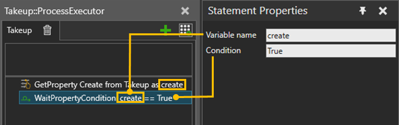

WaitPropertyCondition statement allows you to wait for a variable to have specified value. VariableName and Condition property values form a single expression that is evaluated every time the value of the variable defined by VariableName changes. Variable name property can refer to process variables or component properties of the owner component.
The process execution is blocked until the whole expression evaluates to True. If the variable is not found, the process execution continues.
Generally, this statement is used with Get Property statement.

| Name | Description |
| VariableName | Name of the variable which value is used to compare against the expression of Condition. Variable name property can refer to process variables (both static and runtime variables) or component properties of the owner component. See also Using Process variables. |
Condition |
A string property that is parsed into a comparison operator and its calculated value is compared with the value of the property defined by VariableName. See also Process Statement Expressions. |